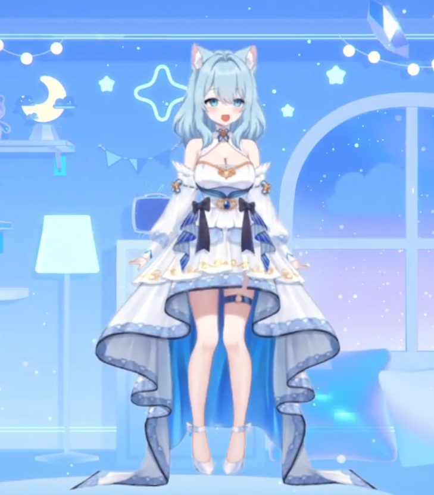
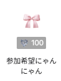

プロフィール

名前：瑠羽にゃるる
誕生日：7月3日
身長：153cm
体重：マカロン22個分
足のサイズ：22cm
好きなもの：猫、アニメ、ゲーム
瑠羽にゃるるは2025年11月22日にLIVE2Dデビューをした配信者です
twitchをメインで配信しており、たくさんのリスナーのみなさんと楽しく参加型をしています
参加型はチャンネルポイント100にゃねぽで「参加希望にゃ」を引き換えることで参加できます
